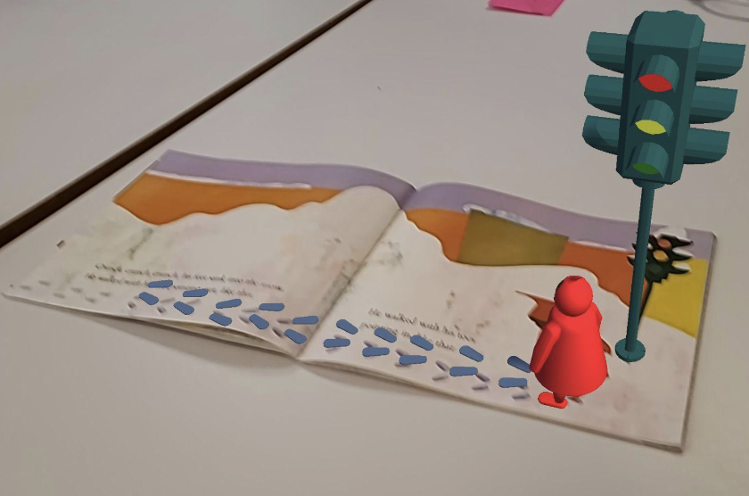
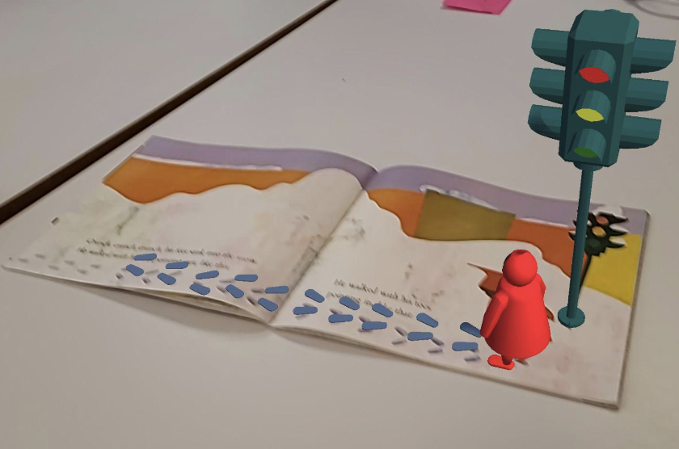

Student Projects
MobiusWalk: Powered Omnidirectional Treadmill
Sabrina Hare
Louisa Wood
Charles Young
Omnidirectional treadmill with a unique structural design, a unified torus-like belt, that enables significantly lower cost and higher reliability.
In topology, a torus is homeomorphic to the cartesian product of two circles, which promises that one can go around the torus in two independent directions forever. Coincidentally, this is exactly what an omnidirectional treadmill needs. So we made our belt into this shape and designed drive modules accordingly.
The advantage of this design is clear: significantly less moving parts that enables lower cost and higher reliability. But the process to make it work is not easy, see the logbook for details. To integrate our product into existing VR solutions, we implemented bluetooth connection in the onboard control chip to communicate with any headset that supports bluetooth.

For the control algorithm, we decided to implement a computer-vision-based solution, which provides the possibility to offer movement prediction and therefore faster response. For the current stage, we used opencv to identify visual fiducials, and we plan to replace it with a deep learning based pose estimation solution.
Log book: https://docs.google.com/document/d/1nOo4zDN24DHwQ3Ybsj5JdggHba-XH2AUskDlep-x21o/edit
Walk This Way
Daniel Halis
Xinyi “Cindy” Yang
We propose “Haptic Nudges,” an extension to redirected walking (Razzaque et al. 2002) techniques to provide an intuitive, unobtrusive understanding of the real-world space. Haptic Nudges maximise virtual traversal distance while increasing agency. In addition, we update existing Open Source redi- rected walking toolkits (Azmandian et al. 2016), (Li et al. 2021) with new redirection algorithms and expose artificial potential fields (Dong et al. 2020) for all techniques. The combination of these techniques can be applied as a drop-in addition to any existing Unity project.
Full project write up: click to download
Museum of the Mind
Alice Cai
Gloria Kang
Lucy Nester
Museum of the Mind is an interactive, AI-assisted VR ideation space. It allows users to explore a museum and co-create art galleries with an AI in an adaptive environment. Users input ideas they want to explore with text-to-speech which is then run through GPT3 to generate related text and a diffusion model to generate related images in real time, in front of the user. EEG data is simultaneously used to manipulate features of the environment to increase immersion. Because of the generative and personalized nature of Museum of the Mind, every session is completely unique.
Museum of the Mind in an ideation space which is intended to let users explore and visualize new ideas. It takes advantage of VR as a way to create and explore spaces which don’t exist in reality, and the environment is intentionally epic and surreal to help users get into a new mindspace. After beginning a new session, users ideate using voice input–anything from keywords to whole sentences. This input is then run through GPT3 to expand on the idea and generate image captions. By utilizing GPT3’s natural language generation to create these image captions, we let the human and the AI co-create, showing users something new to build off of or play with as they ideate about their concept. The image captions are then passed to our server, which uses a diffusion model to generate images, each of which will be completely unique. Users can then continue on in the space giving a new prompt or expanding on previous exhibits in each gallery.
SlideMill
Jack Eastman
Jack Lewis
AhnPhu Nguyen
Luka Srsic
Slidemill is an immersive device aimed at bringing cheaper and more accessible virtual reality treadmills to the market. Utilizing a DIY treadmill design, along with accessible electronics, we were able to create an omnidirectional passive treadmill that interfaces with the Oculus Quest 2 to allow users to control locomotion in virtual reality using their real legs, walking. With such a design, virtual reality becomes infinitely more immersive, with your motions in the real world being tracked and translated into the virtual space. By syncing real world and virtual movements this also goes a long way to counter one of virtual reality’s biggest problems: motion sickness.
Our project centers around the idea of an omnidirectional treadmill, a treadmill upon which a user can walk indefinitely in any direction. This would allow the user to have much more immersion, being able to walk themselves around their virtual space without limits, rather than needing to utilize a joystick or teleportation locomotion. To accomplish this, we built a low cost treadmill system that employs slippery materials in order to allow a user to slide their feet along the surface. The user is held in place with a support system, preventing them from moving off of the treadmill or falling down. Two slippery shoe covers are provided for the user’s feet, to enhance the sliding, as well as ensure that the experience would be the same across users, while still allowing versatility in shoe choice without limiting accessibility. The treadmill was constructed primarily with spare wood, utilizing a large machine bearing to allow the user’s support system to turn with them. Many of the friction reducing surfaces were made from pieces of whiteboard, a material students are likely to be able to find for free. This low cost, DIY approach to building the treadmill will hopefully inspire more makers and creators to look more into the underserved market.
To integrate the motions of the user into the virtual reality space, we utilized two ESP32 microcontrollers, communicating with an icm20948 inertial measurement unit, one for each foot. In addition, there is a button placed on the bottom of each foot to ensure that the user’s movement data was more accurate and that their motions would only be captured if their feet were on the ground. The devices would be attached to the user's foot to measure acceleration, rotation, and magnetometer data. The data from this was then filtered in order to provide smooth measurements to the Quest 2. On the Quest, these measurements were interpreted into locomotion data for the user. Then, the Quest, using this data, would move the user around in the virtual world, according to the measurements from the ESP32.
Combining the omnidirectional passive treadmill and the foot tracking devices, one could theoretically walk for an infinite amount in any direction, thus greatly increasing the immersion of their virtual reality experience. Without the limitations of a user’s physical space, immersion is greatly increased. Users are no longer bound by the confines of their rooms, and instead can explore the virtual world, walking and running without constraints. In our vision, we wanted to bring this experience to more users, to make it more accessible. In this project, we believe that we have demonstrated that this is possible. Next generation VR locomotion can be made accessible to more users.
AR Storybook
Margaret Wang
Preston Bezos
In this project we have created an AR application that merges computer vision and storytelling to augment beloved storybooks. Users are able to point their phones at an existing children’s book (for this project, “The Snowy Day” by Ezra Jack Keats) and the characters and objects in the book come to life as 3D assets before their eyes. This 3D representation emerges perpendicular from the book, and can be viewed from all angles by moving the book or phone around. The user can admire the art and read the story, and when they are ready, flip the page for the next element of the story.
 


Rhythm Rider
Andrew Emmel
Haley Higginbotham
Livia Zhang
Ride away to your favorite songs on an actual skateboard, in VR! We have developed a controller built on top of a skateboard that, when paired along with the experience we developed, allows you to move your character in-game. Simply tilt yourself on the skateboard in order to move your character from side to side in-game, while also trying to ride over the notes.
We designed a controller with a skateboard deck as a base. Basically, it has an IMU to sense changes in rotation on the skateboard. This IMU communicates with an Arduino, which then communicates with the Quest. Changes in rotation are then translated into horizontal movement for the player in-game.
As for the game itself, it takes place in a zen-like environment, with buildings that pop out of the ocean upon hitting notes. These notes are automatically placed as you play a song, meaning you can put any song onto your VR headset and play it in game. We achieve this by analyzing the song and finding where the notes land, and then placing notes on the musical staff/track.
We’re hoping the mix of a unique physical interaction alongside fun gameplay will create a compelling demo for everybody!
ESCAPE: the Quest
Emeka Ezike
Jared Scott
Henry Smith
Eli Villa
ESCAPE: The Quest is a virtual reality escape room that uses various bio signals to make for a more immersive and interactive experience. The escape room consists of a set of challenges, each with a different biosignal hardware component. Particularly, one challenge uses a Brain Computer Interface that was implemented using a Mindflex headband. One challenge uses a heartbeat monitor to provide audio and visual feedback to the user. Although puzzle games and escape rooms have been done in VR, the use of biosignals makes for a novel experience that could be replicated in future VR projects.
You start in a broken down spaceship that has been taken over by an evil AI. Your goal is to repair the ship and find a way to defeat the AI before it’s too late! You wake up to alarms blaring and no power to the ship. You must first restore power by turning the engine back on. This is done by manually overriding the engine with your brain power (BCI puzzle). Then you must find the secret passcode that will cure the AI. \It is on a satellite near the ship that you must navigate to using your thrusters (Debris Challenge). However, there is debris flying around that you must avoid! Hearing and feeling your heartbeat puts the pressure on you to not make a mistake.
Once the passcode is safe in hand, you go to the secret room and put on the virtual reality goggles to enter the metaverse and input the passcode (AR puzzle). Then you have cured the AI and can return home.